King and Ace Cricket brand suite
The identity for King and Ace Cricket, built on the Nexxus Drako Multimedia design system: maroon and gold, a modular display face, flat colour. Every file here is generated by node scripts/brand.mjs --png, so change the script, not the files.
The mark
A crowned card over a wicket. The crown is the King, the card is the game, the three stumps and two bails are the cricket. Use the gold-on-maroon version anywhere; use the open versions on a ground that suits their ink.
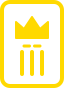
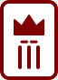
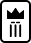
Lockups
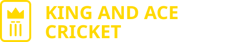
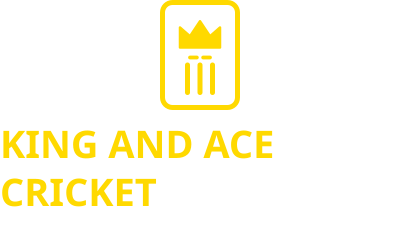
- Keep
space-10(40px at 484px wide, scaling with the logo) clear on every side. - Smallest sizes: mark 16px wide, horizontal lockup 160px wide, stacked lockup 120px wide.
- Gold ink goes on black or maroon, maroon ink on white or light grounds, black ink for one-colour print.
- The wordmark is set in Orbitron Bold, the stand-in for HK Modular where it isn't licensed. In Canva you can rebuild the display lines in HK Modular, but use these files for the logo itself.
Never
- Recolour it, add a gradient or shadow, stretch it, crop the card, or re-set the wordmark.
- Put maroon ink on maroon, or gold ink on white.
- Put the logo over the low-poly pattern directly. Use a solid maroon or gold panel.
- Put the logo inside, over or merged with the pride flag or the Nexxus Drako Multimedia lockups. Sit them beside each other.
Colour
#7f0000#ffd900#000000#ffffffGold on maroon and maroon on gold are both 8:1. Gold on black is 14:1. Never gold on white (1.4:1). Dark is the primary theme. The rest of the tokens, including the colour-blind-safe status colours, are in web/tokens.css.
App icons
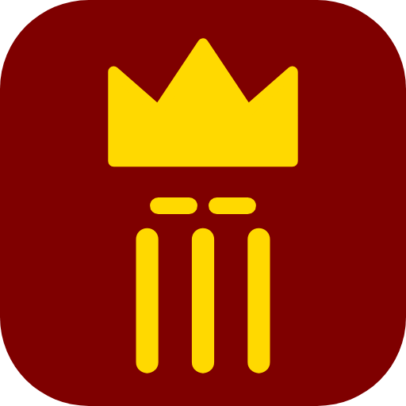
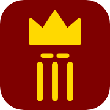
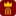
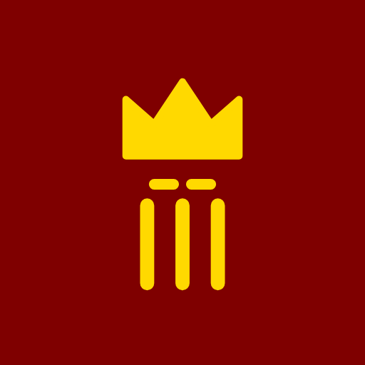
The icon drops the card outline so the crown and wicket stay readable at 16px. icon/favicon.svg is the scalable favicon, icon/favicon.ico holds 16, 32 and 48, and icon/site.webmanifest names the app icons.
Social and screens
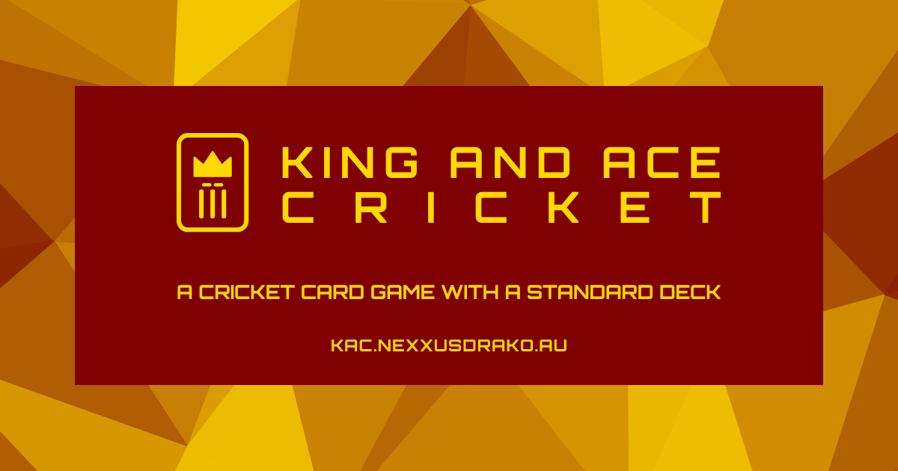
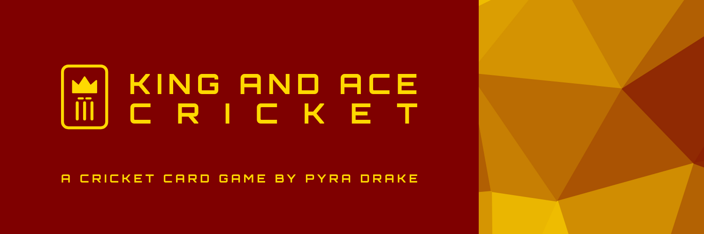
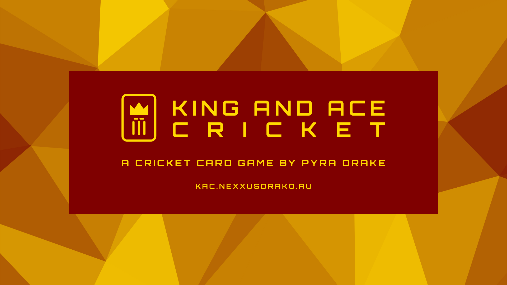
The low-poly pattern (pattern/lowpoly-gold.svg, copied unchanged from the design system) is the only texture. Crop it, never tile or recolour it, and keep all text on a solid panel above it.
Card back
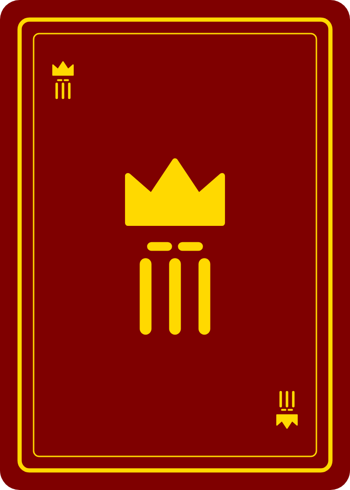
cards/card-back.svg is the print master; leave bleed in your printer's template.Voice
First person, warm and direct, Australian English (colour, organise). Display lines in uppercase, running text in sentence case, no emoji. Pyra Drake is the lead commentator, and commentary is generated text in that voice, not a recording. Lines used on the graphics:
- A cricket card game with a standard deck.
- A cricket card game by Pyra Drake.
Statements
Every public-facing surface carries both, in these exact words.
Nexxus Drako Multimedia is created on the stolen lands of the Jagera and Turrbal peoples, in what is now called Brisbane. Sovereignty was never ceded. This always was, and always will be, Aboriginal land. I pay my respects to Jagera and Turrbal Elders past and present, and to all Aboriginal and Torres Strait Islander peoples. Colonisation didn't end; it's ongoing, and I back First Nations-led fights for land back, treaty and truth-telling.
Nexxus Drako Multimedia is queer-run and queer-made. Trans, nonbinary, intersex, asexual, aromantic, bi, pan, lesbian, gay and every other queer voice is welcome here, and actively backed — not tolerated, backed. Transphobia, intersexphobia, homophobia, biphobia, acephobia and any other bigotry get you removed, no warnings and no debate. Trans rights are human rights.
Short form for bios and descriptions: Made on stolen Jagera and Turrbal land. Sovereignty never ceded. Always was, always will be Aboriginal land.